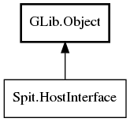

HostInterface
Object Hierarchy:

Description:
public interface HostInterface :
Object
An interface to common services supplied by the host (Shotwell).
Each Pluggable is offered a HostInterface for needs common to most plugins.
Note that a HostInterface is not explicitly handed to the Pluggable through the SPIT interface, but is expected to be offered to the
Pluggable through an interface applicable to the extension point. This also allows the extension point to extend HostInterface to offer
other services applicable to the type of plugin.
All known sub-interfaces:
Namespace: Spit
Package: shotwell-plugin-dev
Content:
Methods:
-
public abstract
File get_module_file ()
Returns a File object representing the library file (.so/la.) that the plugin was loaded from.
-
public abstract
bool get_config_bool (string key, bool def)
Get a boolean from a persistent configuration store.
-
public abstract void set_config_bool (
string key, bool val)
Store a boolean in a persistent configuration store.
-
public abstract
int get_config_int (string key, int def)
Get an integer from a persistent configuration store.
-
public abstract void set_config_int (
string key, int val)
Store an integer in a persistent configuration store.
-
public abstract
string? get_config_string (string key, string? def)
Get a string from a persistent configuration store.
-
public abstract void set_config_string (
string key, string? val)
Store a string in a persistent configuration store.
-
public abstract
double get_config_double (string key, double def)
Get a double from a persistent configuration store.
-
public abstract void set_config_double (
string key, double val)
Store a double in a persistent configuration store.
-
public abstract void unset_config_key (
string key)
Delete the value from the persistent configuration store.